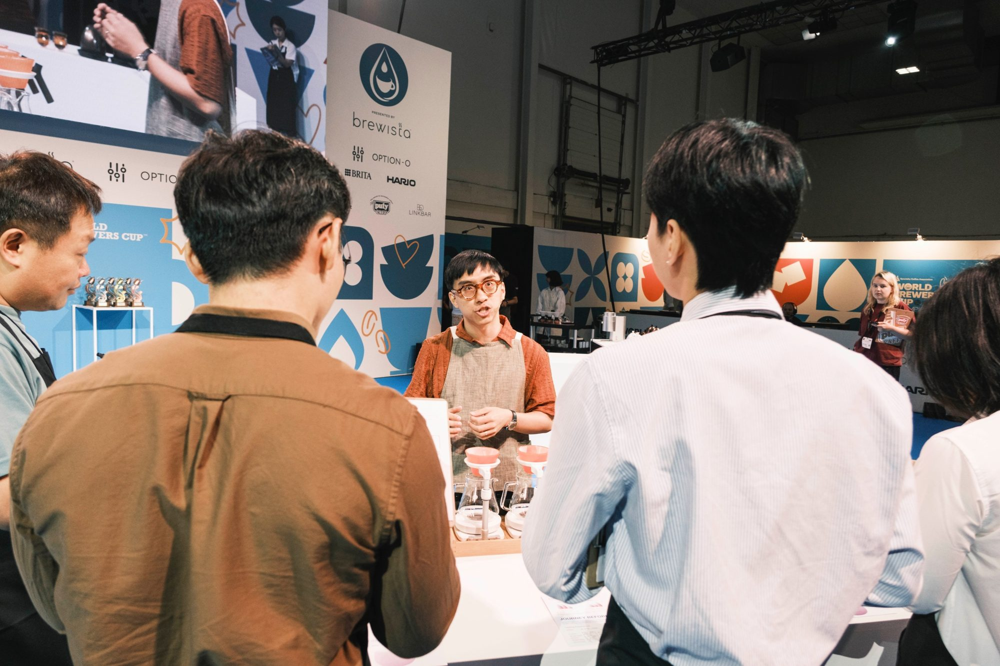

Hello, I'm Bene.
I brew coffee, among other things.

I brew coffee, among other things.
Bene has been a student of specialty coffee for almost 10 years now. His deep love for manual brewing has turned him from a home brewer into a specialty coffee ambassador, sharing his love for coffee to the world. Through the years, he has refined his craft through countless brewing experiments, workshops from esteemed instructors, and competing. His goal now is to take people along with him on the journey, because the infinite possibilities of coffee are better explored together.